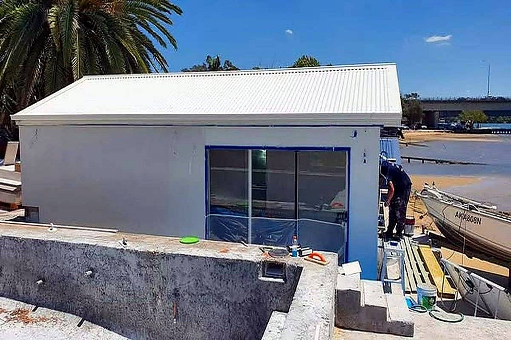

Cement rendering
The traditional sand-and-cement coat, applied over brick, block or blueboard. Hard, breathable and repairable — the right choice where the wall needs to move with the weather and still take a knock.
Cement and acrylic rendering, texture coating and render repairs across Newcastle and the surrounding suburbs. Straight walls, clean corners, and a finish that still looks right after a few summers.

A render job is decided before the first bag is mixed: what the wall is made of, how much sun it takes, and what the finish has to survive. That is what gets quoted.
The traditional sand-and-cement coat, applied over brick, block or blueboard. Hard, breathable and repairable — the right choice where the wall needs to move with the weather and still take a knock.
A polymer-modified render that flexes with the substrate and resists cracking better than straight cement. Used where there is movement, or where a smoother, more consistent finish is wanted.
Rolled or sprayed coatings that give the wall a fine grain, a float finish or a heavier sand texture — and put a weather skin over the render at the same time.
Drummy sections cut out, edges feathered and the patch floated to match the surrounding wall. Hairline cracking raked and filled rather than painted over.
Older rendered homes cleaned down, failed patches repaired and the whole wall re-coated so the finish is even from the front fence to the back corner.
Both are render. The difference is how much they move and what they cost to keep. If you are not sure, the wall tells you which one it wants.
| Finish | Best for | What to know |
|---|---|---|
| Cement | Brick and block, older homes, hard-wearing walls | Traditional mix, breathable, easy to patch later. Needs curing time and a sealer to hold its colour. |
| Acrylic | Newer builds, blueboard, walls with movement | Flexes with the substrate, less prone to hairline cracking, dries to a more uniform tone. |
| Texture coat | Rendered walls that need a weather skin or a different grain | Goes over sound render. Hides small imperfections and can be re-coated without cutting back to the base. |
| Repair & recoat | Walls with drummy patches, cracks or patchy fading | Cheaper than a full re-render when the base is still sound — but only if the sound areas are genuinely sound. |
Wall type, height, access and how much needs cutting out. The quote is built from that, not from a photo.
Surface cleaned, loose render removed, windows and frames masked, beads set where the wall needs them.
Coats applied and floated while they are workable, so corners stay sharp and the plane stays flat.
Texture or coating applied where it is specified, site swept down, and the wall walked with you before we go.

Most failed render starts at a crack, a downpipe or a corner that never got enough cover. Painting over it holds for a season. Cutting it back and re-rendering holds for years.
Based in Newcastle, working across the Hunter and Lake Macquarie. If you are just outside the list, ask — the answer is usually yes.
What it is built from, roughly how many square metres, and whether it is a new render, a repair or a re-coat. Photos help.
Millard's Rendering Pty Ltd
Newcastle & surrounds · 0431 285 705